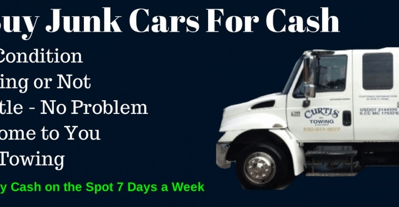

Do you require to sell your Hyundai car quick? Why not get in touch with top dollar for Hyundai automobiles Perth solution today to get your cars and truck sold within 1 hr or less. Did you know, the cars and trucks that Hyundai brings to the market constantly leave the customers mesmerized and also satisfied. Hyundai has always provided the very best items when it involves the vehicle market. So when it pertains to availing cash for Hyundai vehicles, it should not be a tiresome task.
Different platforms, as well as companies, are drifting that can assist you in making the procedure hassle-free and also smooth. You can conveniently put a telephone call, publication your timings, as well as get the very best cash for your Hyundai automobile.
You can approve a great deal of range out there when it comes to Hyundai vehicles. So the concern is, what all is acceptable for availing the best money? The answer to this concern is easy; all versions, as well as colours of Hyundai automobiles, are acceptable.
It does not matter what the design, year, or problem of your Hyundai car is; you can worry-free proceed with the rest of the job. There are scenarios when you wish to market or eliminate your Hyundai auto. It could be damaged, scrapped, or even harmed in an accident.
Cash for cars is an excellent service for each scenario. Even if you are looking to eliminate an old or unused automobile, it is the very best alternative. Regardless of the reason, shade, or version, you can make use the cash for your Hyundai auto.

After experiencing the fundamentals of cash for scrap Hyundai cars & trucks, let us comprehend exactly how you can make the very best out of it. As an effective vendor, your initial duty needs to be getting an offer that is sweat to you and is not causing a loss.
Be it City, Accord, or Brio, and also you need to keep a keen eye on every bargain. Undoubtedly, you will obtain some good deals but make sure that you research before approving any agreement. The firms frequently place their ideal foot onward and also provide you bargains that you can deny quickly.
Go with alternatives where you do not have to throw away a lot of time bargaining the deals. The bargains should be the very best one for you. This is the essential step as this research study will certainly take your ahead as well as obtain you the most effective.
After securing as well as completing the bargain, the process is virtually done, and you can schedule a day as well as time for the pickup. It is common after the pick-up of the vehicle that you obtain instant cash.
There are a few things that you have to guarantee before setting up the pick-up of your Hyundai vehicle. The number of plates, as an example, need to be obtained. You must likewise keep ID evidence useful to confirm your identity. In many cases, the firm will certainly additionally intend to see the ownership of the automobile.
After making certain that every little thing remains in location, you can call and also schedule the pick-up of your lorry.
If you are looking for a proper quote for your Hyundai automobile, after that it is just a call away. Correct study and documentation will certainly gather the very best deal for you. Make certain that no matter what the fundamental attributes of the care are, you can ace the bargain and also get the very best rate for your Hyundai auto with a little initiative.